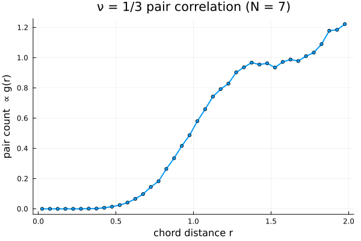

6. Observables: pair correlation and energy
Beyond the density, the two workhorses of FQHE Monte Carlo are the pair-correlation function $g(r)$ and the interaction energy per particle. Both are accumulated from the same Metropolis chain. We use the chord distance $r_{ij} = 2|u_iv_j - u_jv_i|$ between particles on the unit sphere, which the wavefunction already caches in ψ.dist_matrix.
using CFsOnSphere
using Random
using LinearAlgebra
using Statistics
LinearAlgebra.BLAS.set_num_threads(1)
using Plots
gr()Plots.GRBackend()The chain below records, at each step, (i) a histogram of pair distances for $g(r)$ and (ii) the Coulomb energy of the configuration, $V = \sum_{i<j} 1/r_{ij}$, for the energy estimate.
function sample_observables(N, n, p; seed = 3, n_therm = 5_000, n_steps = 40_000, n_bins = 40)
Qstar, l_m_list = cf_ground_state_lm(N, n, p)
rng = MersenneTwister(seed)
ψ, ψ_next = Ψproj(Qstar, p, N, l_m_list), Ψproj(Qstar, p, N, l_m_list)
logpdf(ψ) = 2.0 * real(logdet(ψ.slater_det) + ψ.jastrow_factor_log)
θ, ϕ = rand_θ_ϕ_gen(rng, N)
θ_next, ϕ_next = copy(θ), copy(ϕ)
σ = π / sqrt(12)
it, σ, _, _ = gibbs_thermalization!(rng, ψ, ψ_next, θ, ϕ, θ_next, ϕ_next, σ, logpdf, n_therm)
redges = LinRange(0.0, 2.0, n_bins + 1) # chord distance ∈ [0, 2]
dr = redges[2] - redges[1]
gcount = zeros(Float64, n_bins)
energy_samples = Float64[]
coulomb(ψ) = sum(1.0 / ψ.dist_matrix[k, i] for i in 1:N-1 for k in i:N-1)
lpc = logpdf(ψ)
for _ in 1:n_steps
θ_next[it], ϕ_next[it] = proposal(rng, θ[it], ϕ[it], σ)
update_wavefunction!(ψ_next, θ_next[it], ϕ_next[it], it)
lpn = logpdf(ψ_next)
if lpn - lpc >= log(rand(rng))
θ[it], ϕ[it] = θ_next[it], ϕ_next[it]; copy!(ψ, ψ_next, it); lpc = lpn
else
θ_next[it], ϕ_next[it] = θ[it], ϕ[it]; copy!(ψ_next, ψ, it)
end
# accumulate observables from the current accepted state
for i in 1:N-1, k in i:N-1
b = min(n_bins, 1 + floor(Int, ψ.dist_matrix[k, i] / dr))
gcount[b] += 1.0
end
push!(energy_samples, coulomb(ψ))
it = mod(it, N) + 1
end
rc = 0.5 .* (redges[1:end-1] .+ redges[2:end])
return rc, gcount ./ n_steps, energy_samples
endsample_observables (generic function with 1 method)We measure the $\nu = 1/3$ ground state (n = 1, p = 2).
rc, g, E = sample_observables(7, 1, 2);Energy with a Monte Carlo error bar
Samples in an MCMC chain are correlated, so a naive standard error underestimates the uncertainty. Block averaging — averaging within consecutive blocks and taking the standard error of the block means — gives an honest estimate.
function block_error(x; n_blocks = 20)
bs = length(x) ÷ n_blocks
means = [mean(@view x[(b-1)*bs+1 : b*bs]) for b in 1:n_blocks]
return mean(means), std(means) / sqrt(n_blocks)
end
Emean, Eerr = block_error(E)
println("Coulomb energy V = ", round(Emean, digits=4), " ± ", round(Eerr, digits=4),
" (", round(Emean / 7, digits=4), " per particle)")Coulomb energy V = 15.1881 ± 0.0087 (2.1697 per particle)The pair-correlation histogram
The distribution of pair distances shows the FQHE correlation hole: the probability of two particles approaching vanishes as they coincide, the hallmark of an incompressible liquid.
plot(rc, g; lw=2, marker=:circle, ms=3, legend=false,
xlabel="chord distance r", ylabel="pair count ∝ g(r)",
title="ν = 1/3 pair correlation (N = 7)")
This page was generated using Literate.jl.